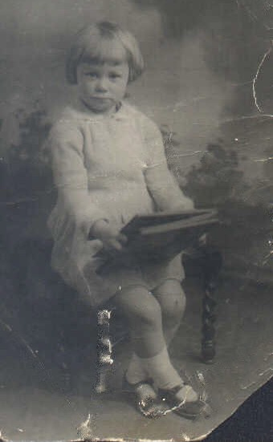
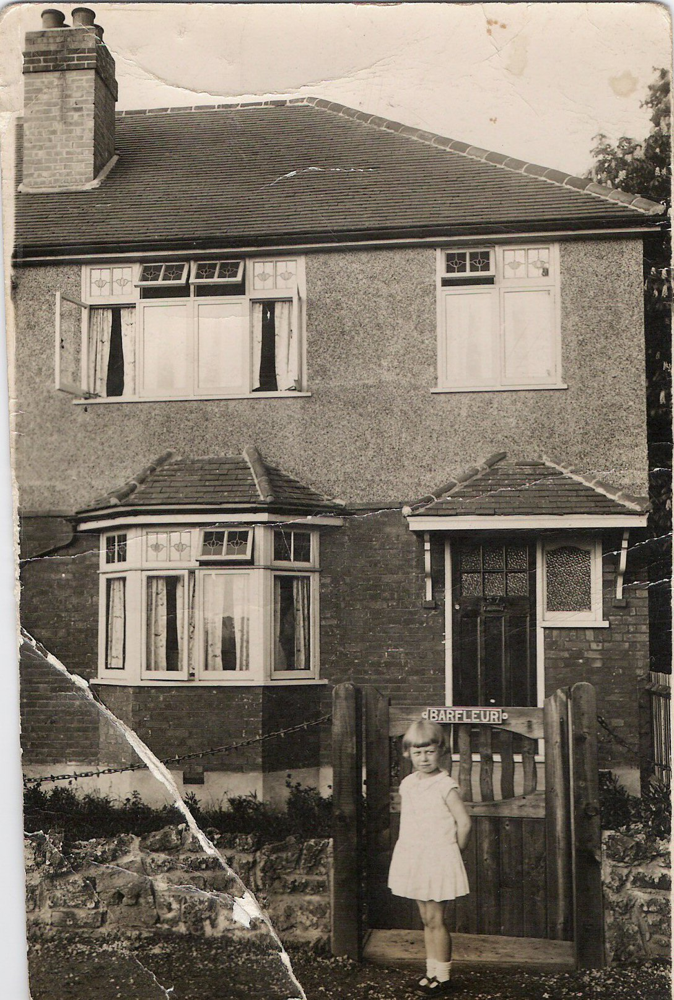
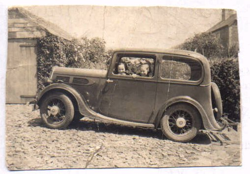
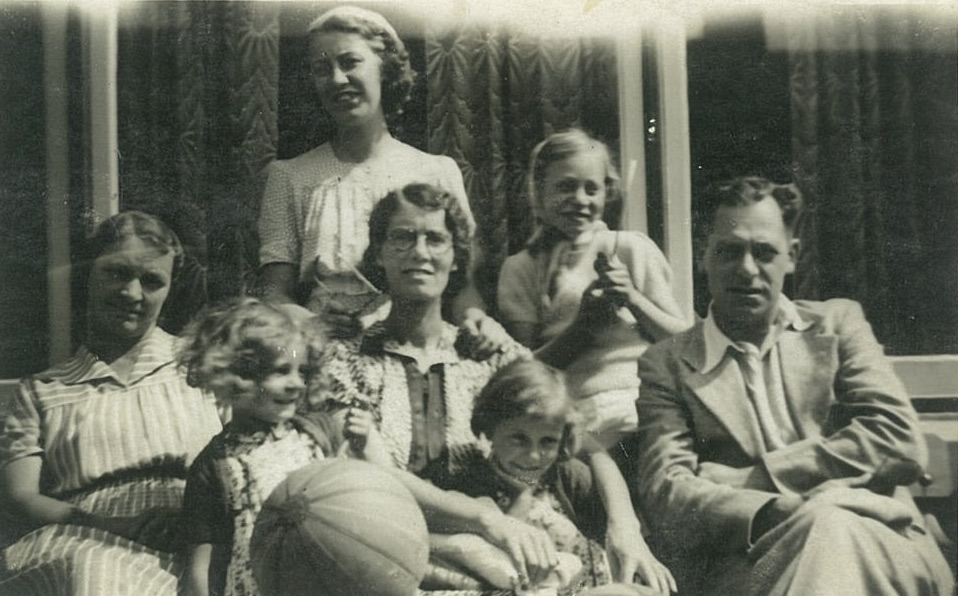
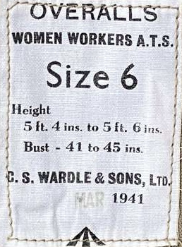
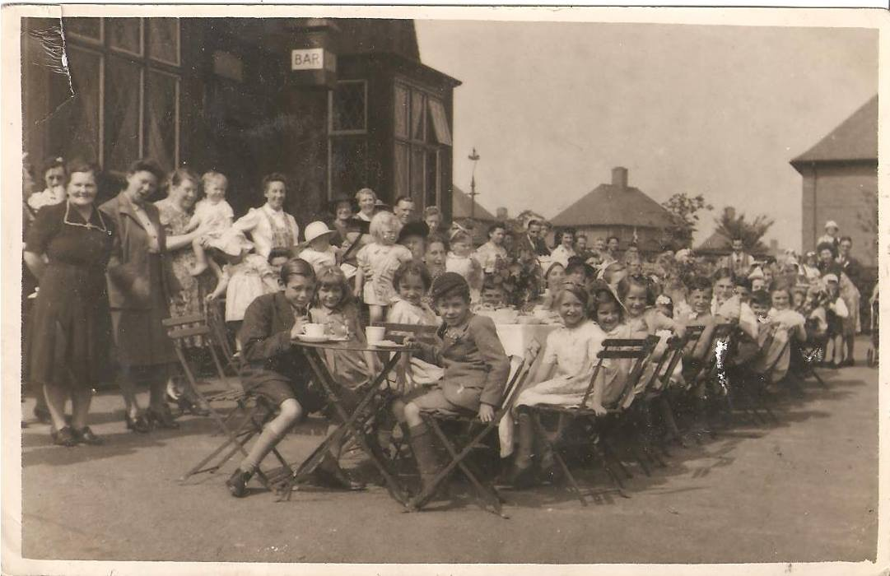
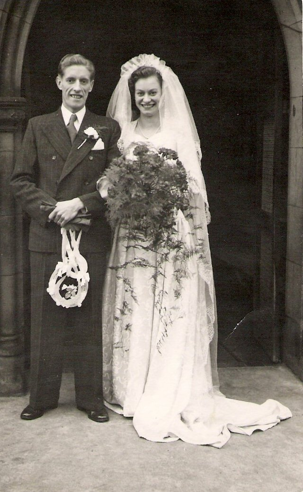
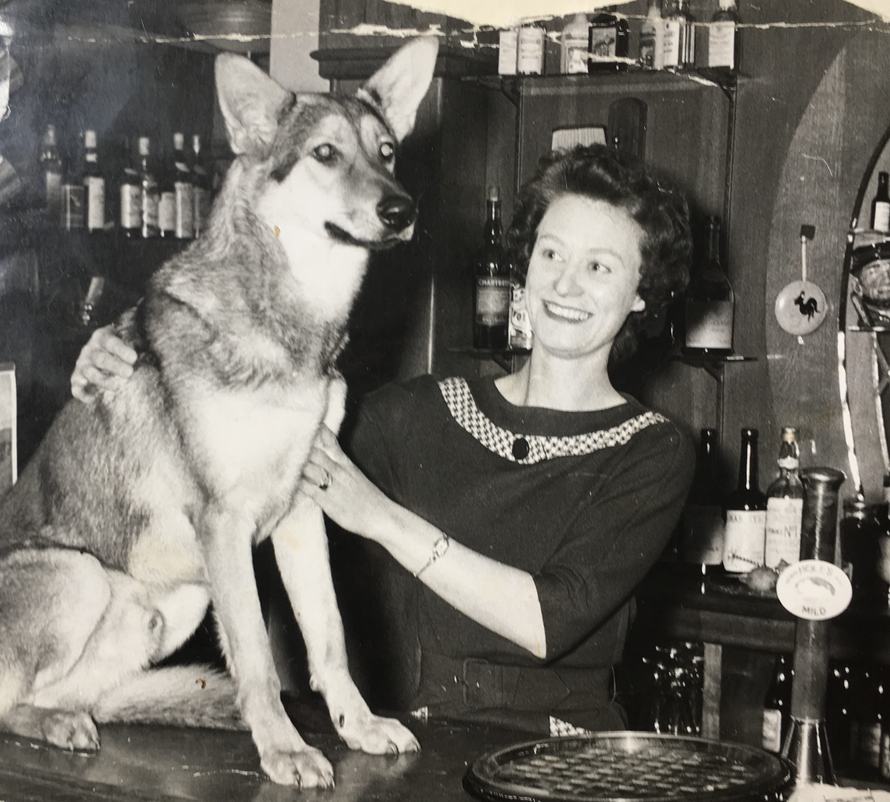

Mavis Drury, 1928 - 2019

Mavis Drury was born in Hutton Street, Colwick, Nottingham on 1 May 1928, to May Coombe (nee Fowler ) and William (Bill) Drury. May was separated from her husband and the couple were staying with May's brother Jack Fowler and his wife Annie. Jack and Annie were recently married with a baby of their own.
Shortly after the birth of Mavis the family moved south to escape the scandal of May's divorce. Mavis spent her early childhood in West London, firstly in Feltham and later Twickenham, close to Bill's sister. May finally divorced her husband in May 1930 and two months later May and Bill were married at Staines Register Office.

In 1933 the family returned to Nottingham and lived in Langdale Road with Eliza, May's mother. May had just given birth to another child, Sheila, but sadly Sheila died before the age of two. Mavis attended Parkdale Infants in Carlton and Jessie Boots Junior School. In 1936 the family secured a new council house in Deepdene Way, Cinderhill. In 1935 May gave birth twin girls June and Jean. All the girls grew up at Deepdene Way and remained their until they had homes of their own.

In August/September 1939, whilst the family were on holiday in Blackpool war was declared. This had a major impact on all of the girls as schools closed and the evacuation of children from major cities was considered. At the time Mavis attended William Crane School in Aspley, Nottingham.

By 1940 some school provision returned and Mavis attended John Player School on a part-time basis until the age of 14 when her formal education ended. At the age of 14 Mavis joined the Junior Air Corps and at 15 she eventually secured employment at CJ Wardles as a sempstress and later a model. She worked here with her mother and sisters until she was married.


Mavis, 1946

In 1947, aged 19, Mavis met Ken Noble for the first time at the Cocked Hat pub in Cinderhill. They married in January 1949 and moved into a small terraced house in Sherwood Street in central Nottingham. Mavis gave up her job at Wardles whilst Ken worked in the Accounts Department of Shipstone's Brewery. In October 1950 Mavis gave birth to their first child, Michael.

Ken and Mavis, January 1949
After four years they finally secured a larger property in Leybourne Drive, Bestwood. The family remained here for three years until 1956 when Ken became Assistant Manager of Trumans Vaults in Nottingham Market Square. On the plus side the job came with a large property on Mansfield Road that was owned by Shipstones. However, it also involved a lot of relief management in and around Nottingham and Mavis and Michael were expected to accompany Ken. In 1957 they all moved to Sheffield where Ken was asked to oversee the transfer of the Atholl Hotel. This took a number of months and it was 1958 before the family returned home to Mansfield Road. In the same year, frustrated at not having his own permanent pub Ken applied to James Hole of Newark for the position of Manager of the Shire Horse in Corby Northamptonshire. So it was that in 1958 the family uprooted from Nottingham and moved to Corby.

After living in Corby for three years Mavis and Ken had their second son, Kevin, in 1962. They remained in Corby for 14 years becoming well known in the town and each playing a leading role in the local LVA. By 1971 Mavis wanted a change and pursuaded Ken to move to the Wheatsheaf Inn in the sleepy Rutland village of Edith Weston. There they remained until 1978 when they returned to Northamptonshire and the Kings Arms at Weldon.
Click here to see Mavis and Ken's Pubs
In 1985 they finally retired to their bungalow in Rutland and took up part-time jobs at Uppingham School where Mavis was a housekeeper. Mavis also took a part-time machinist job at Arnold Wills in Uppingham for a number of years.

Sadly in 2000 Ken became very ill and Mavis nursed him at home until his death in 2002. She then lived alone at Oval Close, North Luffenham, but with a good circle of friends, until her own sudden death at home in February 2019.